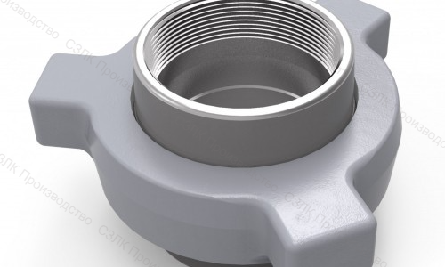
БРС (БыстроРазъемные Соединения)
Категория: Соединительная и запорная арматура
Быстроразъемные соединения предназначены для соединения магистралей разнообразных гидросистем при оперативной коммутации сменного оборудования. Обеспечивают быстрый и надежный монтаж/демонтаж трубопроводов без использования специального инструмента.
Типы БРС
Fig. 1502 - БРС 3''
Быстроразъемное соединение по стандарту Fig. 1502, диаметр 3 дюйма. Предназначено для работы под высоким давлением. Применяется в нефтегазовой отрасли для быстрого подключения оборудования.
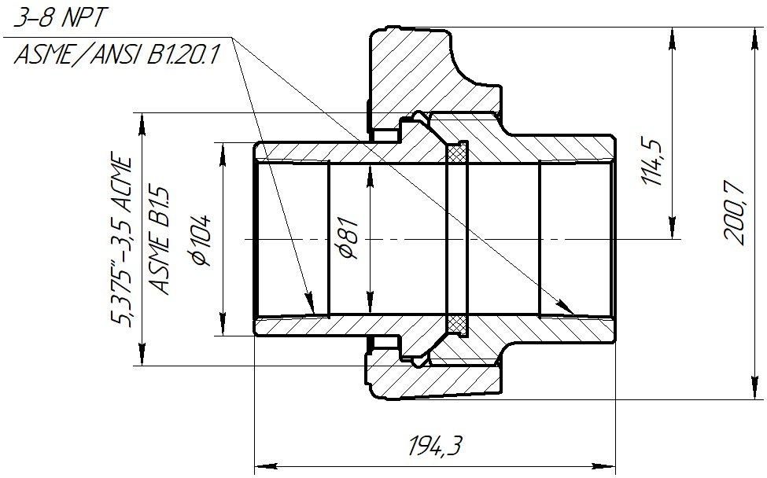
Примечание: Нажмите на изображение для увеличения.
Fig. 1502 - БРС 2'' (НКТ 60)
Быстроразъемное соединение по стандарту Fig. 1502, диаметр 2 дюйма, с резьбой НКТ 60. Обеспечивает герметичное соединение для работы под высоким давлением.
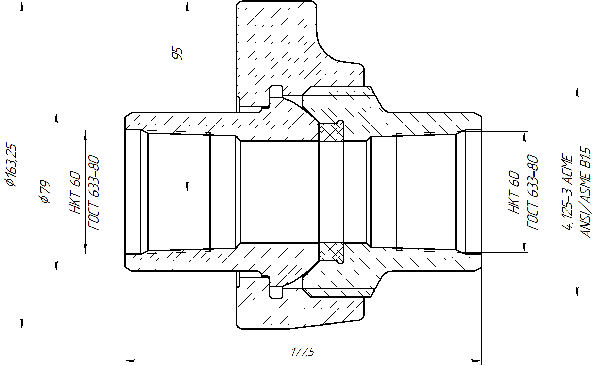
Примечание: Нажмите на изображение для увеличения.
Fig. 1502 - БРС 2'' (2-11,5 NPT)
Быстроразъемное соединение по стандарту Fig. 1502, диаметр 2 дюйма, с конической резьбой NPT 2-11,5. Обеспечивает надежное соединение с трубопроводами соответствующей резьбы.
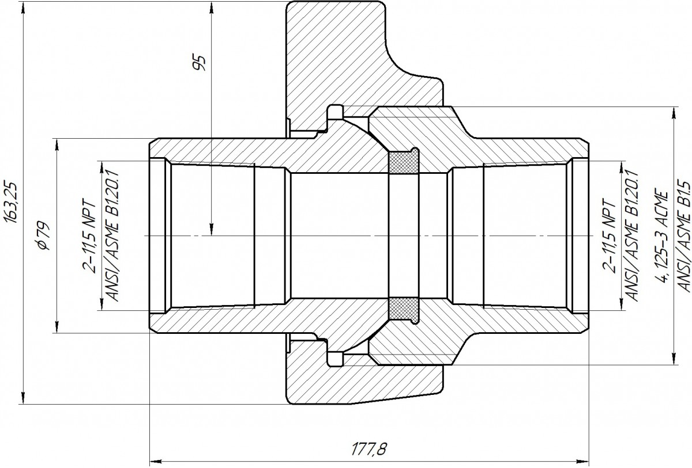
Примечание: Нажмите на изображение для увеличения.
Fig. 200 - БРС 2''
Быстроразъемное соединение по стандарту Fig. 200, диаметр 2 дюйма. Компактная конструкция для средних давлений, удобство монтажа и эксплуатации.
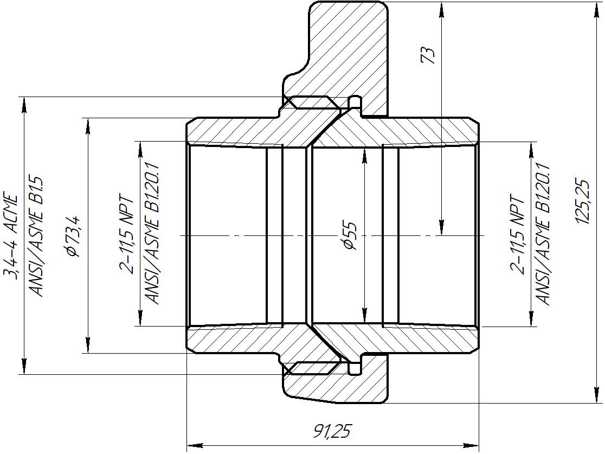
Примечание: Нажмите на изображение для увеличения.
Fig. 206 - БРС 4'' СВ
Быстроразъемное соединение по стандарту Fig. 206, диаметр 4 дюйма, версия СВ (соединение высокое). Предназначено для работы с высокими нагрузками и давлениями.
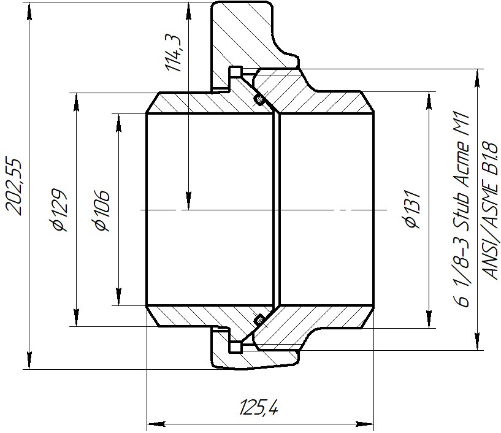
Примечание: Нажмите на изображение для увеличения.
Fig. 206 - БРС 4''
Быстроразъемное соединение по стандарту Fig. 206, диаметр 4 дюйма. Стандартная версия для широкого спектра применения в гидросистемах.
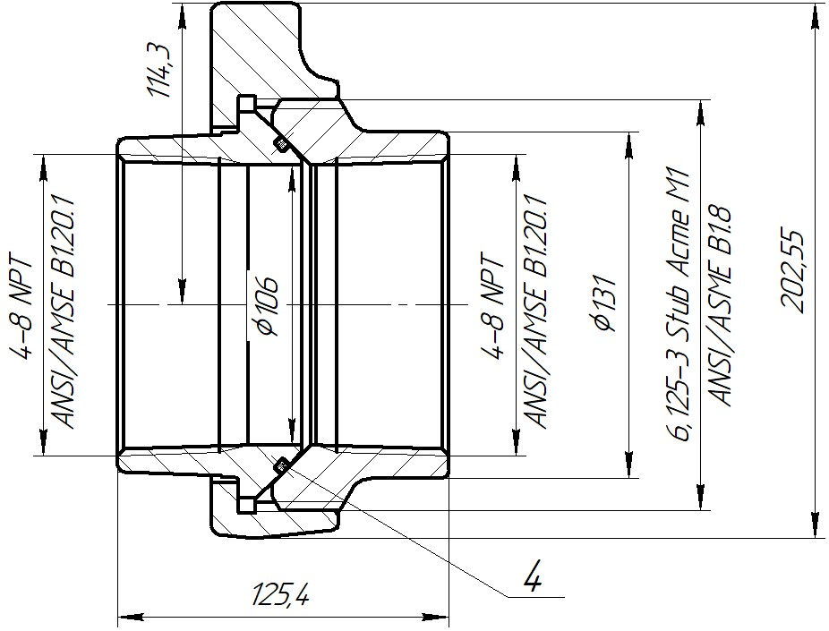
Примечание: Нажмите на изображение для увеличения.
Fig. 211 - БРС 4'' с хомутом
Быстроразъемное соединение по стандарту Fig. 211, диаметр 4 дюйма, оснащенное хомутом для дополнительной фиксации. Обеспечивает повышенную надежность соединения.
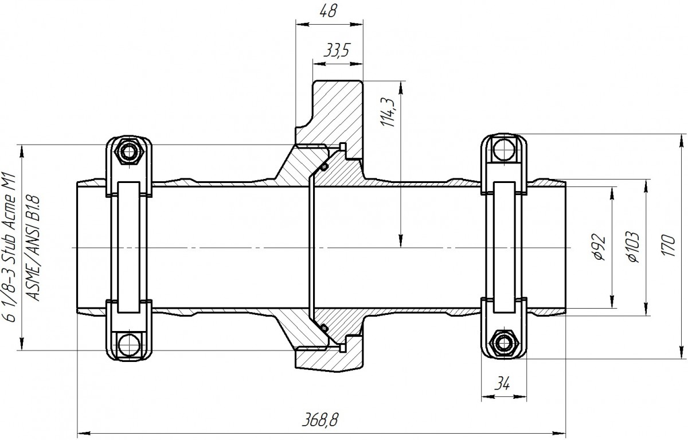
Примечание: Нажмите на изображение для увеличения.
Fig. 211 - БРС 4''
Быстроразъемное соединение по стандарту Fig. 211, диаметр 4 дюйма. Стандартная версия для работы в различных гидравлических системах.
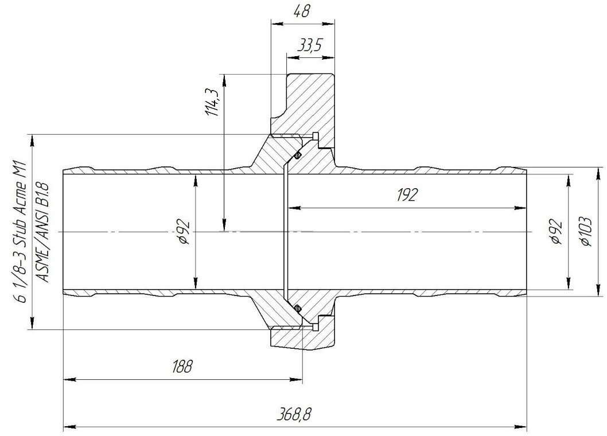
Примечание: Нажмите на изображение для увеличения.
Патрубок БРС 4''
Патрубок для быстроразъемного соединения диаметром 4 дюйма. Используется как переходной элемент для подключения к системе.
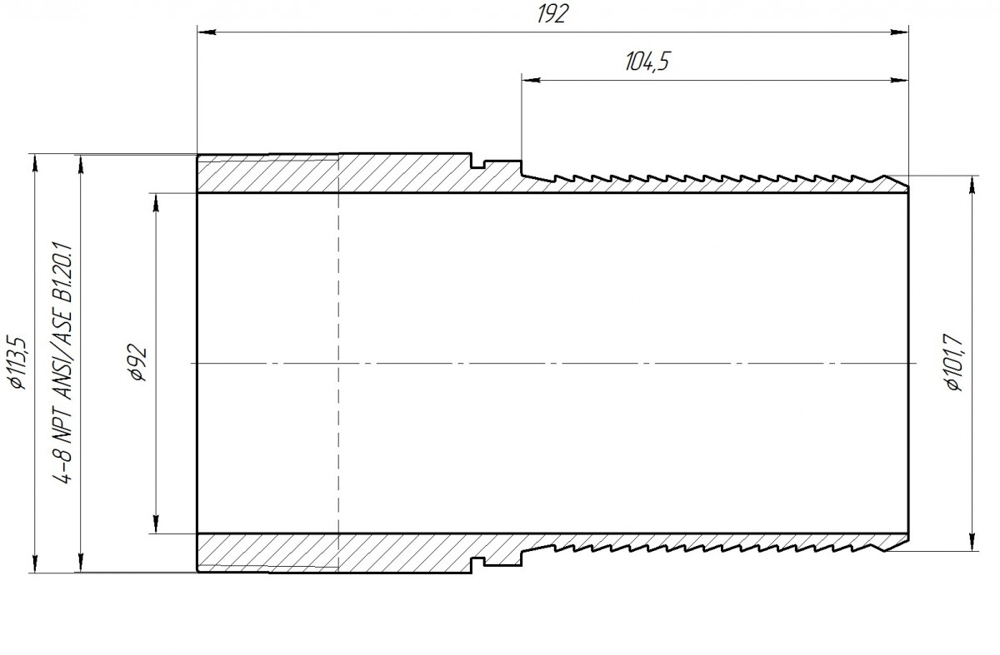
Примечание: Нажмите на изображение для увеличения.
Патрубок-2 БРС 4''
Патрубок БРС 4'' (вторая модификация). Отличается конструктивными особенностями для специфических условий эксплуатации.
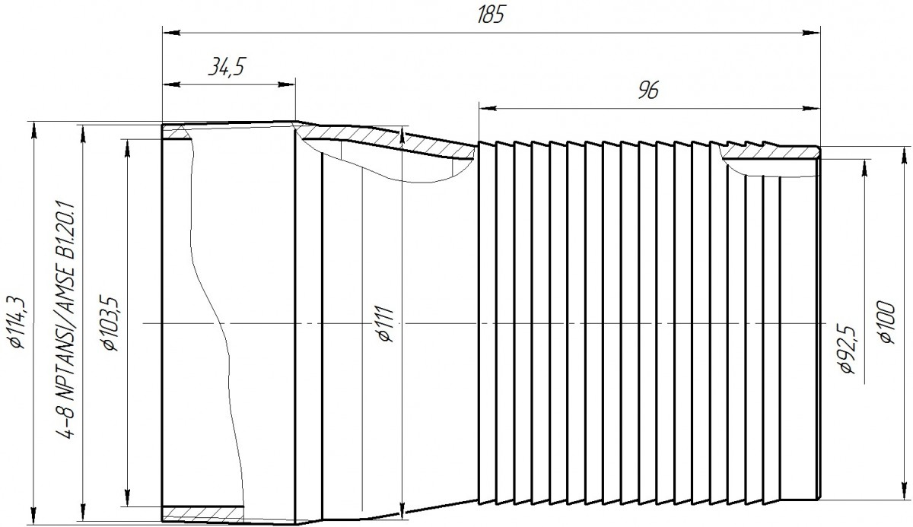
Примечание: Нажмите на изображение для увеличения.
Хомут для БРС 4'' Fig. 211
Хомут для быстроразъемного соединения диаметром 4 дюйма по стандарту Fig. 211. Предназначен для дополнительной фиксации и повышения надежности соединения.
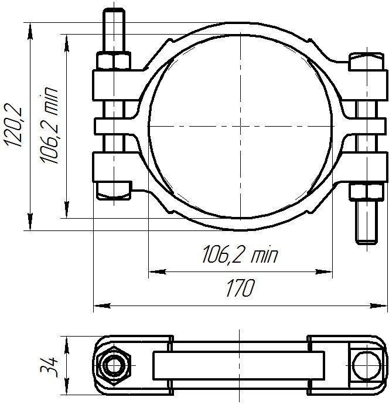
Примечание: Нажмите на изображение для увеличения.